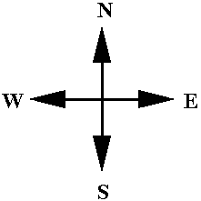
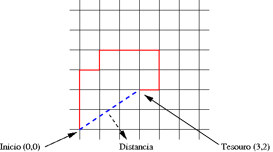

| Docente: | Zanoni Dias |
| Monitor: | Christian Baudet |
Encontrar um tesouro é muito simples! Tudo o que você precisa é um mapa que indique onde ele está. Bom, isso é verdade se você não tiver a bússola mágica do Capitão Jack Sparrow que indica a direção de qualquer coisa que você deseje.
Os piratas do Caribe, famosos por aterrorizarem outros barcos e lutarem com mortos-vivos com caras de molusco, possuíam enormes tesouros e mapas muito elaborados. Estes mapas normalmente eram lidos da seguinte maneira: "Comece na palmeira solitária. Ande três passos em direção à floresta. Vire para a esquerda e ande 22 passos. Passe atrás da grande rocha e ande 113 passos até a pequena fonte de água. ... blá, blá, blá, blá ... Finalmente, ande 5 passos para o Norte e cave para encontrar o baú."
Mapas detalhados como os dos piratas eram muito interessantes e, com certeza, tinham um forte potencial turístico já que você era obrigado a dar volta pela ilha toda e observar os pontos de referências.
Um modo muito mais rápido e prático de se indicar as direções é através da utilização dos 4 pontos cardeais (N - Norte, S - Sul, E - Leste e W - Oeste).
|  |  |
Por exemplo, o caminho para o tesouro indicado no mapa acima poderia ser descrito como: "Ande três passos para o Norte. Ande um passo para o Leste. Ande 1 passo para o Norte. Ande três passos para o Leste. Ande dois passos para o Sul. Ande um passo para o Oeste."
Se ao invés de utilizar o mapa acima, você tivesse a bússola do pirata Capitão Jack Sparrow, você poderia ir direto da origem até o tesouro e andar a distância de aproximadamente 3,6 passos.
Sua tarefa é escrever um programa em linguagem C (lab05a.c) que, dado um mapa de pirata (seqüência de passos) descubra as coordenadas no espaço em que o tesouro se encontra e indique a distância que o Capitão Jack Sparrow andaria se estivesse sóbrio.
Utilize o esboço do programa e lembre-se de colocar o cabeçalho e incluir comentários pertinentes.
| Entrada | Saída |
| N 3 E 1 N 1 E 3 S
2 W 1 X |
Coordenadas:
(3.000,2.000) Distancia: 3.606 |
| N 10 S 15
X |
Coordenadas:
(0.000,-5.000) Distancia: 5.000 |
| N 10.5 S 20.1 W
5.4 N 2 W 34.32 E 5.55 X |
Coordenadas:
(-34.170,-7.600) Distancia: 35.005 |
#include <math.h>
#include <stdio.h>
int main() {
double x, y, distancia;
char action;
double move;
// Le o primeiro movimento
scanf("%c", &action);
// Enquanto nao encontrou o tesouro
while (action != 'X') {
// Le a distancia a se locomover
scanf(" %lf", &move);
// Le o proximo movimento
scanf(" %c", &action);
}
// Imprime a resposta
printf("Coordenadas: (%0.3lf,%0.3lf)\n", x, y);
printf("Distancia: %0.3lf\n", distancia);
return 0;
}